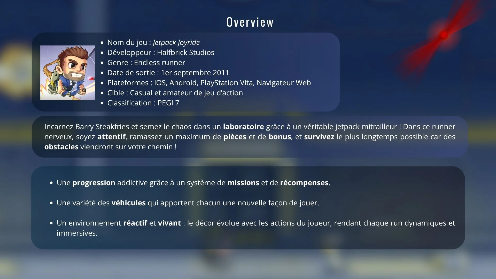
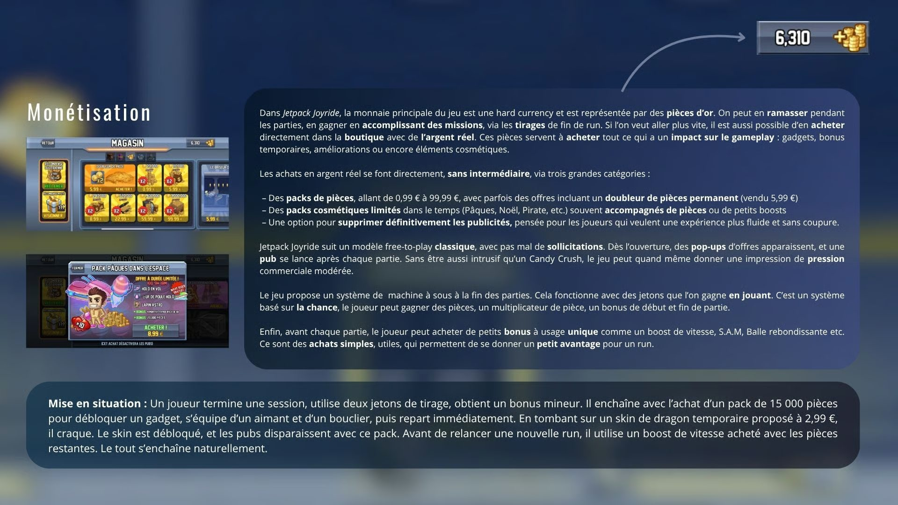
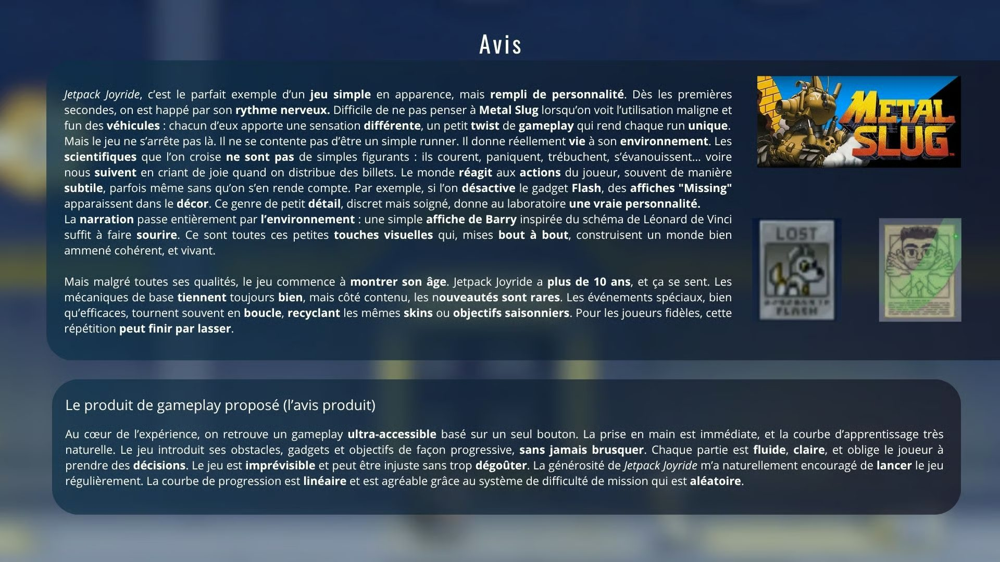

Analyse et déconstruction : Jetpack Joyride
Analyse en profondeur d’un jeu mobile
Pour ce devoir de deuxième année, j’ai choisi de décortiquer Jetpack Joyride, jeu mobile développé par Halfbrick Studios. L’objectif était d’en analyser en profondeur les mécaniques, la boucle de gameplay, la direction artistique et les intentions de design, afin de comprendre ce qui rend ce titre aussi addictif et efficace.
Contenu du document
- Présentation du jeu et de son contexte de sortie
- Décomposition des mécaniques et de la boucle de gameplay
- Direction artistique et lisibilité
- Intentions de design et courbe de difficulté
- Modèle économique et rétention du joueur
- Conclusion et enseignements tirés pour ma pratique
Diaporama d’analyse








